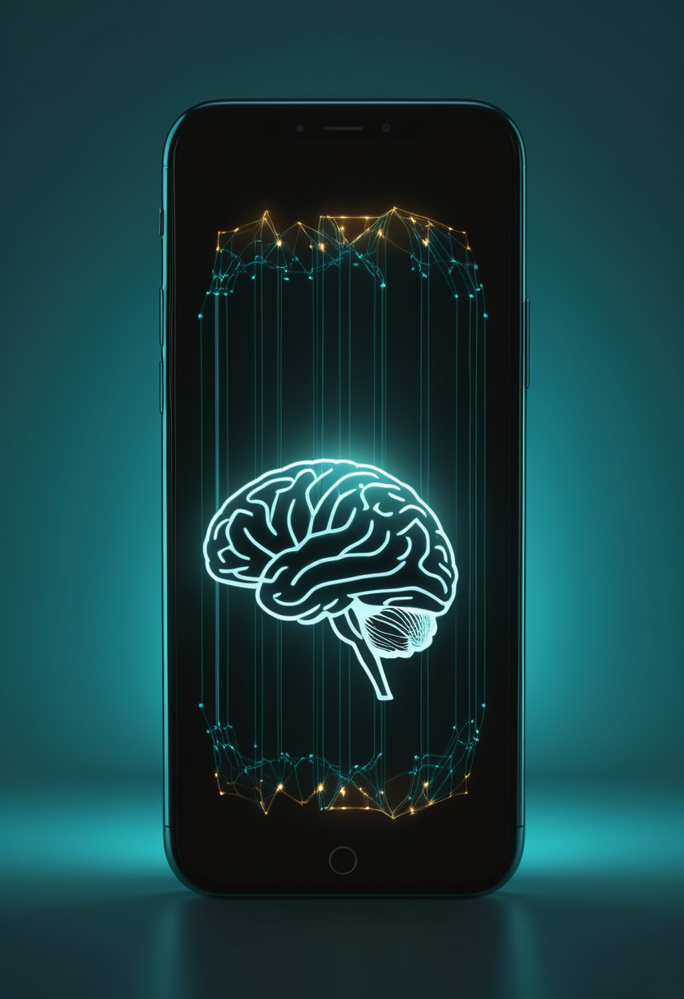
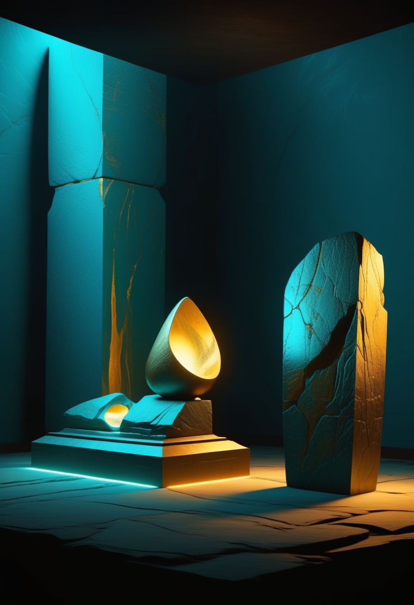

北米神経科学学会で、iPhone上で動く『脳→テキスト』変換BCIが発表された。携帯型の意思疎通支援が、治験の外の日常へ近づく一歩。エボラは確定1万1,600例台で推移を続け、マダガスカルのmpoxはアフリカ最大規模の流行に広がる。神舟24号はパキスタン人飛行士という初の外国人訪問を迎え、火星では眠る火山の兆候が、スペインの砂州では青銅器時代まで使われ続けた巨石墓が見つかった。
北米神経科学学会(Society for Neuroscience)は11月17日、まひのある人の意思疎通を取り戻すBCIをテーマに記者会見を開いた。ジョージア工科大学/エモリー大学のチェタン・パンダリナート氏らは、病院の大型コンピューターに頼らず、市販のiPhone上だけで脳活動を文字に変換できる携帯型の『脳→テキスト』BCIを発表した。発表者らは、脳から音声・脳から文字への変換技術が、臨床試験の枠を出て日常生活の中で使われる段階に近づいたと述べている。関連するプレプリント『FETTUCCINE』では、市販のモバイル端末上で実時間の最大370倍の速度で信号処理ができたと報告されているが、学会発表の内容との正確な対応関係は確認できていない(要確認)。
Biogenは、腰椎穿刺を繰り返すことが難しくなった患者向けに、恒久的に植え込むポートとカテーテルを使って薬剤を脊髄周囲に届ける医療機器『ThecaFlex DRx』(Alcyone Therapeutics社開発)を使い、スピンラザ(ヌシネルセン)を投与する臨床試験が募集中であることが11月13日に伝えられた。『PIERRE』試験は腰椎穿刺が困難な患者を対象に機器の安全性・性能を検証し、関連する『PIERRE-PK』試験(NCT06555419)は、既に安定したスピンラザ治療(4か月ごと12mg)を受けている患者で、従来の腰椎穿刺による投与とポート経由の投与の体内動態を比較する。繰り返しの穿刺で血中濃度が不安定になりやすい患者にとって、新しい選択肢になりうる。
スピンラザの投与路に新しい選択肢が加わった。腰椎穿刺が難しくなった患者にとって、植込み型ポートは『薬を届け続けられるか』という最も基本的な課題への答えになりうる。
今日の一本の詳細。北米神経科学学会の11月17日の記者会見で、ジョージア工科大学/エモリー大学のパンダリナート氏らが、市販のiPhone上で動く携帯型の『脳→テキスト』BCIを発表した。病院の大型設備に頼らずに動くことで、BCIが治験の外の日常生活に届く可能性が高まるとされる。視線入力分野については本号では新発表を確認できなかった。
Fortune(11/21、FourWeekMBAが要約)によると、Neuralinkの埋込み者数はこの1年で約7人から約26人に増えた。競合SynchronのCEOは自社の埋込み者を15人としている。ただし独立のBCI追跡調査(BCI Intel、2026年5月時点)では既に28人という報告もあり、報道・集計元によって数字が分かれている(要確認)。11月20日に公開されたコントローラーなしで『GTA VI』を操作するデモ(前号既報)に続き、症例数の面でもNeuralinkが先行する構図が報じられている。
携帯端末で動くBCIは、治験の外の日常へ届く具体的な一歩になった。一方で埋込み者数という『規模』の物差しは、報道ごとに数字が揺れていることも分かった。
米CDCの集計を引用したContagion Liveの報道では、コンゴ民主共和国のブンディブギョ型エボラは11月17日時点で確定1万1,645例・確定死者5,683人とされる。前号(11/21号)で報じた同じ11月17日時点の集計(確定11,613例・死者5,678人)とはわずかに差があり、欧州疾病予防センター(ECDC)の11月16日時点の集計(確定11,504例・死者5,630人)ともずれがある。いずれも、毎週400〜500例規模の新規報告が続くという大枠は共通しており、数字の微差は集計の締め日・確定基準の違いによるものとみられる(要確認)。
2025年12月以降、マダガスカルではクレードIbによるmpoxの流行が続いている。フランスの医療情報サイトmesvaccins.netは11月3日時点の集計として、疑い5,872例のうち確定3,797例・死者23人(致死率0.6%)と報じた。WHOはこの流行を2025年12月以降でアフリカ最大規模のmpox流行と位置づけており、飛行歴のある患者を通じて隣国コモロにも感染が広がった。アフリカCDCは11月3日、マダガスカル・コモロでの症例増加を改めて報告している。WHOによる11月分の公式な状況報告は本号の時点で確認できておらず、数字は二次集計に基づく(要確認)。
エボラは集計元によって微妙に異なる数字を示しながらも、『収まらないが急増もしない』状態が続いている。マダガスカルのmpoxは、アフリカで最大規模という静かな危機として広がり続けている。
中国の有人宇宙船・神舟24号と長征2号Fロケットは、11月17日に酒泉衛星発射センターの発射エリアへ移送された。中国載人航天工程辦公室は11月7日、パキスタン人飛行士が搭乗員に加わり、中国の宇宙基地『天宮』を訪れる初めての外国人になると発表した。候補はムハンマド・ジーシャン・アリ氏とクーラム・ダウード氏(いずれも空軍パイロット)とされ、どちらが搭乗するかは未発表。打ち上げの具体的な日時はまだ公表されていないが、11月末までに行われる見通しとされる(前号までの『11/25打ち上げ予定』は公式発表としては未確定)。パキスタン人飛行士は任務後、中国人飛行士2人とともに神舟23号で帰還する計画。
ロシア科学アカデミーのアレクサンドル・トロヒモフスキー氏らの研究チームは、ESAの火星探査機『ExoMars Trace Gas Orbiter』の観測データから、火星のアルバ山(太陽系最大級の火山地形)周辺にできた新しい裂け目で、塩化水素ガスが繰り返し検出されたと学術誌Science Advancesに発表した。通常は夏に強まるはずのガス検出が、気温の低い『遠日点』の時期に集中していた点が従来のパターンと異なり、地下のマグマが熱源になっている可能性を示すという。チームは、地下にガスのポケットがあるだけなのか実際に活動中のマグマがあるのかは未確定とし、裂け目周辺の色の変化も噴気孔の鉱物沈着で説明できる可能性を残している。新しい溶岩流や噴火そのものは観測されていない。アルバ山周辺では近年『火星地震』の兆候も報告されており、火星が完全には地質学的に死んでいない可能性を補強する材料になる。
神舟24号は、初の外国人飛行士という具体的な一歩に近づいた。火星では、眠っていたはずの火山が、ガスという形でまだ息をしているかもしれない兆候を見せている。
神経科学者エリック・ホール氏(Bicameral Labs)は11月、arXivに論文『Qualiaphobic artificial neural networks (and why to build them)』を投稿した。どの主要な意識理論からも『意識がある』と判定されないように、知識蒸留やルックアップテーブル化などの手法でAIをあえて設計するという発想を示している。意識を持たないと示せるAIであれば道徳的配慮の対象にならず、『AIの権利』をめぐる論争そのものを避けられるとの主張だが、そうした制約によって性能が落ちる懸念も指摘されている。査読前のプレプリントであり、本文の詳細な検証はまだ進んでいない。
イタリア南部ターラント近郊マンドゥリアの『メッサピア式城壁考古公園』で、紀元前4〜3世紀ごろとみられる『第17号墓』が発掘された。墓内部には聖域の鍵を描いた壁画、儀式用の香炉、そして古代のプレローマ語であるメッサピア語の碑文が残されていた。碑文の解読から、ある女性の名と父親の名、そして『タバラ(thabara)』という神官を示す称号が読み取れ、研究者らはギリシアの女神デメテルの女神官だった可能性があるとみている。別の石板にもう1つの碑文がある。女性の正体や具体的な役割はまだ確定しておらず、副葬品だけでは女神官だったと証明できないという指摘もある。調査団は周辺の24基の墓も調査しており、その多くが盗掘で損傷していた。

ビハンデ=ビラ氏らの研究チームが、スペイン南部トラファルガー岬の砂州(トンボロ)で2021〜22年に発掘した2基の巨石墓について、学術誌PLOS ONEに発表した。16人分の人骨の放射性炭素年代測定により、両方の墓が紀元前1875〜1625年ごろまで使われ続けていたと判明し、イベリア半島で確認されている集団埋葬の巨石墓としては最も新しい時期にあたるという。副葬品には金・銀・象牙の品が含まれていた。墓がその時期に新しく建てられたのか、はるか昔の新石器時代の建造物を青銅器時代の人々が再利用したのかは未確定で、周辺からは先行する居住や埋葬の跡が見つかっていない。研究チームは、発光年代測定など追加の調査でこの点を確かめる必要があるとしている。
『意識を持たないAI』をあえて設計する逆転の発想と、2,300年前のイタリアの女神官、そして青銅器時代まで使われ続けたスペインの巨石墓――どれも、境界線をどこに引くかを問う話だった。
今号の軸は『境界線をどう引くか』だった。iPhoneで動くBCIは、意思疎通という技術の届く範囲を病院の外まで広げた。AIの意識をめぐっては『あえて持たせない』という逆転の提案が出て、エボラとmpoxはそれぞれの集計の中で静かに拡大を続けている。神舟24号は国境を越えた初めての搭乗者を迎えようとし、2,300年前のイタリアの女神官と青銅器時代のスペインの巨石墓は、死者をどう送り出すかという境界線を、はるか昔から問い続けていたことを静かに語る。
おやすみなさい、また明日。